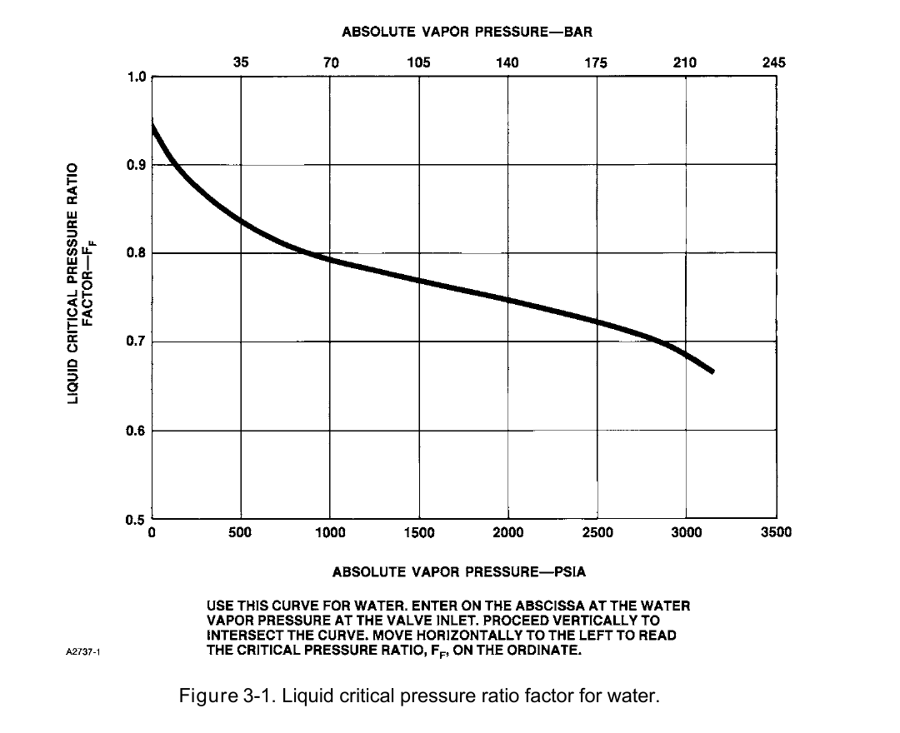

Worked Example: Real Service Cv Calculation

- 1Calculate preliminary Cv from P1, ΔP, Q, and fluid properties
- 2Check the result against qmax/ΔPmax via FF
- 3A Cv that exceeds the choked-flow limit forces a trim-type reconsideration — back to CVE1's flowchart step 2→3 judgment, now with real numbers
Control Valve Sourcebook — Oil & Gas, worked Cv calculation for a water service (Component Index: ogas-cmp-ff-chart-water). A separate FF chart for non-water fluids also exists in the source (ogas-cmp-ff-chart-nonwater, not shown on this slide) — the calculation procedure is identical, only the chart lookup differs by fluid family.